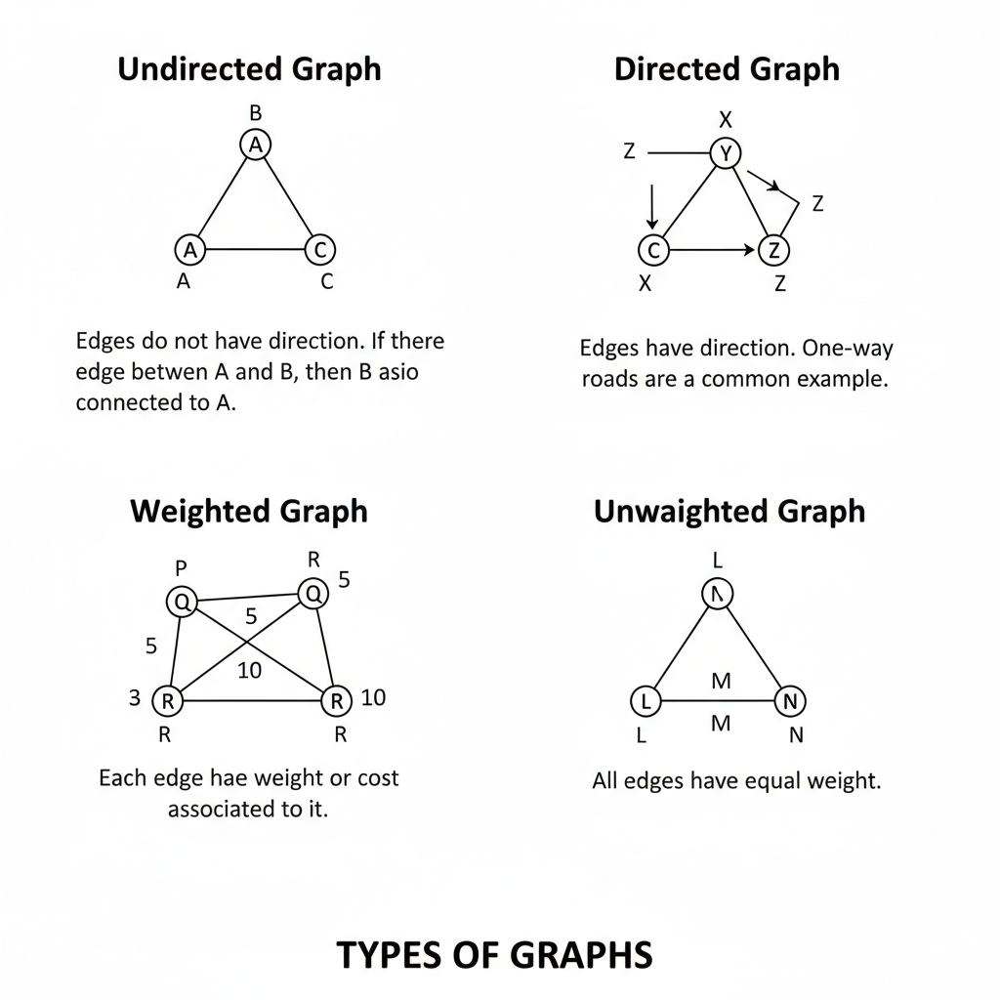

🔗 Graphs
A graph is a data structure that consists of a set of vertices (nodes) and edges that connect pairs of vertices. Graphs are used to represent relationships between objects.
Why Graphs are Important
- Model real-world networks like roads and social media
- Used in navigation and routing algorithms
- Essential for competitive programming
- Frequently asked in interviews
Types of Graphs
Undirected Graph
Edges do not have direction. If there is an edge between A and B, then B is also connected to A.
Directed Graph
Edges have direction. One-way roads are a common example.
Weighted Graph
Each edge has a weight or cost associated with it.
Unweighted Graph
All edges have equal weight.

Graph Representations
Adjacency Matrix
Uses a 2D matrix to represent connections between vertices.
Adjacency List
Uses a list to store neighboring vertices for each vertex. It is more space-efficient than an adjacency matrix.
Graph Traversal
Breadth First Search (BFS)
BFS explores the graph level by level using a queue. It is used to find the shortest path in unweighted graphs.
Depth First Search (DFS)
DFS explores as far as possible along a branch before backtracking. It uses recursion or a stack.
Time Complexity of Traversals
- BFS: O(V + E)
- DFS: O(V + E)
Graph Traversals – BFS vs DFS
Graph traversal algorithms visit all vertices of a graph. The two most important traversals are Breadth First Search (BFS) and Depth First Search (DFS).
| Traversal | Working Principle | Time Complexity | Data Structure Used |
|---|---|---|---|
| BFS | Visits nodes level by level, exploring all neighbors first. | O(V + E) | Queue |
| DFS | Explores deep into the graph before backtracking. | O(V + E) | Stack / Recursion |
Common Graph Applications
- Shortest path algorithms
- Cycle detection
- Connected components
- Topological sorting
Graph Algorithms – Code & Time Complexity Calculation
Graph algorithms work on vertices (nodes) and edges. Their time complexity depends on how many vertices (V) and edges (E) are visited during execution.
| Algorithm & Code | Explanation & Time Complexity |
|---|---|
Breadth First Search (BFS)
BFS(start) {
|
Visits vertices level by level using a queue. Each vertex is visited once and each edge is checked once. Time Complexity: O(V + E) Space Complexity: O(V) |
Depth First Search (DFS)
DFS(v) {
|
Explores as deep as possible before backtracking. Each vertex and edge is processed once. Time Complexity: O(V + E) Space Complexity: O(V) (recursion stack) |
Dijkstra’s Algorithm
Dijkstra(source) {
|
Finds shortest paths from a source vertex. Uses greedy selection of minimum distance vertex. Time Complexity: O((V + E) log V) using priority queue |
Topological Sort
topoSort() {
|
Orders vertices in a directed acyclic graph (DAG). Each vertex and edge is processed once. Time Complexity: O(V + E) |
Graphs in Interviews
Interviewers test your ability to choose the correct traversal, represent graphs efficiently, and analyze time complexity.
Practice graph problems to strengthen problem-solving skills and build confidence.